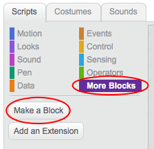
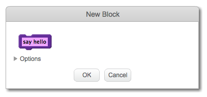
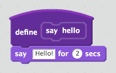
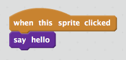
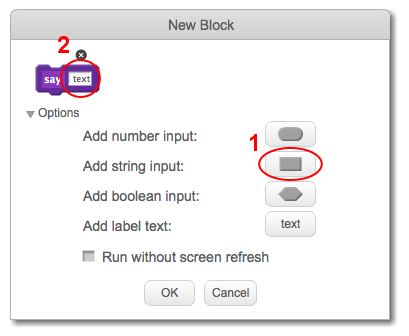
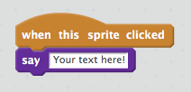

Making a block
- Click the Scripts tab, then on More Blocks, and then click Make a Block.

- Give your new block a name and then click OK.

- You will see a new
define block. Attach code to this block.

- You can then use your new block just like any normal block.

- The code attached to your new
define block is run whenever the block is used.

Making a block with parameters
- You can also create blocks that have 'gaps' for adding data. These 'gaps' are called 'parameters'. To add parameters, first make a new block, and then click on Options to choose the type of data you want to add. Then give your data a name, and click OK.

- You will see a new
define block as usual, except that this one contains the data gap you added and which you gave a name.

- You can then use your new block, filling in data in the gap.

- As usual, the code attached to your new
define block is run whenever the block is used.